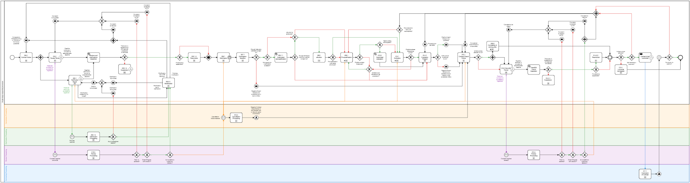
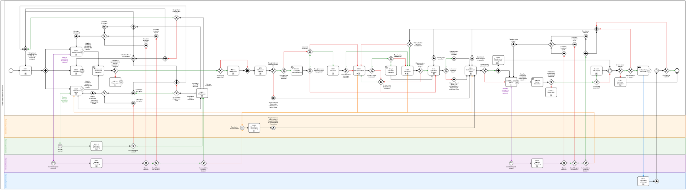
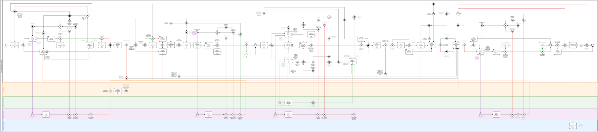
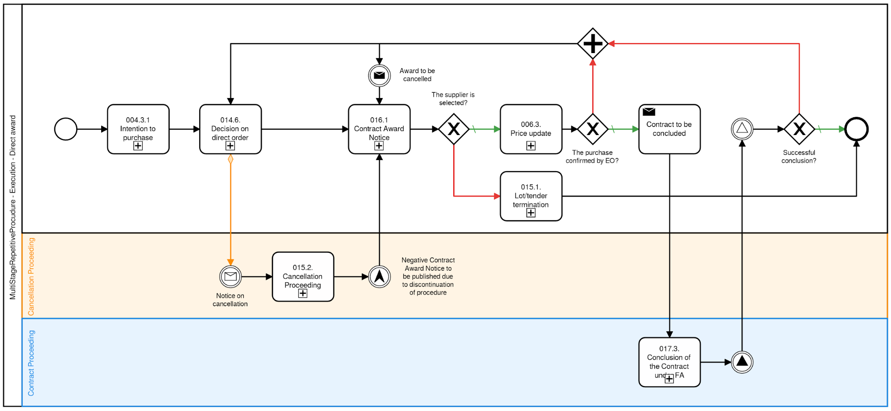

Introduction
MTender is an electronic procurement system designed for end-to-end digital service supporting the entire public procurement process, from demand planning to payment. It is a prototype developed by the EBRD UNCITRAL Initiative, a technical cooperation between the European Bank for Reconstruction and Development (EBRD) and the United Nations Commission for International Trade Law (UNCITRAL). The MTender pilot was initiated by the Ministry of Finance of Moldova in November 2016, and has been used since October 2018 by the majority of public sector contracting authorities (CAs) in Moldova.
This document contains the MTender technical documentation that describes the implementation of architecture, data models, data standard and environment of the Architecture of the OCDS Open Source Central Unit of the electronic public procurement system for the MTender.
The document explains in detail:
- The design and development principles that guide the system implementation;
- The system architecture, data standard, modules and components;
- The business process engine that acts as logical layer for identifying an event, and then selecting and executing the appropriate reaction;
- The system API and the processes to consume information from the system; description of system features to allow its use from endpoints (retrieving information, creating objects, updating information, etc.)
Background Information
MTender consists of an open source government-owned central unit, a web portal, and several networking e-commerce platforms (NEPPs), and it uses an Open Contracting Data Standard (OCDS) and open source distributed architecture. It is the second electronic procurement system using an OCDS, after Prozorro in Ukraine. MTender resembles blockchain, but without a blockchain price tag. Instead of blockchain technology, it uses open data in the format of the OCDS to guarantee data standardisation and ensure user trust in data exchange accuracy.
MTender provides digital procurement services to end users – contracting authorities and economic operators (EOs) – through the NEPPs, which collaborate with e-government services. The central unit serves as an interoperable online OCDS data exchange and a transaction repository for linked NEPPs. Data collected by the central unit is displayed in real time in the MTender web portal, which is accessible, searchable, government-run and open source. This web portal serves as a single point of access to all ‘collected at source’ procurement information, including electronic bidding. It is automatically synchronised in real time between all network members – the central unit, web portal, NEPPs, and e-government services and digital registers, when available..
MTender offers an end-to-end electronic procurement system with the three main characteristics of (i) modularity, which enables flexibility, self-executability and high levels of data resilience; (ii) networked interoperability of the digital procurement solution, which allows for its open multi-platform implementation; and (iii) a transparent and comprehensive digital solution with structured transactional data, which allows for further public procurement process analyses.
For additional information on the MTender concept, see: https://github.com/MTendereProcurementSystem/MTender-Description/wiki
General approach
To ensure the attainment of the objectives set for the IT System, the following principles shall be considered while designing, developing and implementing the Architecture of the OCDS open source central unit of the electronic public procurement system.
Multi-platform networking model
Any system based on this architecture will consists of a CDU that communicates in real time with several NEPPs and external information systems (eGov services) that ensure complete digitization of public procurement procedures. CDU consolidates and distributes all data entered and generated by NEPPs, and performs all transactions, processes and functionalities of the lifecycle and the NEPPs are serve as a user-interface - frolm registration of user account, through UI for all transactions processes and functionalities of lifecycle, up to ability of end-users to use needed eGov Services.
End-to-end public procurement processes
The functionalities of the system based on this architecture from CDU perspective will cover the entire procurement process, from procurement planning to billing and public procurement payments. Online tools will make the system easier for all end-users and will generate process improvements and significant benefits.
Interoperability with eGov Services
This architecture designed to ensure interoperability with existing and future eGovernment services and local national public registers. This approach guarantees a modern and advanced eProcurement system with comprehensive functionalities, but without presenting huge risk or expense since eGovernment services have already been significantly developed in most countries.
Open source, open data and open contracting data standards.
This architecture designed for a stack of open-source technologies to foster transparency and accountability of public procurement by incorporating open data concept and Open Contracting Data Standard. Openness of data shall help building citizens’ and economic operators’ trust in the Government, in efficiency of public procurement management and discourage any corrupt practices.
Split-level architecture
Involves independent design of systems’ components in compliance with interface standards between levels, which facilitates future incorporation of new services, evolution of the different functionalities and, in general, scalability of the system.
Reliable data
Any data shall be entered into the system through authorised and authenticated channels only.
Extensibility
Possibility to expand and supplement the system based on this Architecture with new functions or improve the existing ones.
Additional features
The following key features are applied for the development of the architecture of an Open Source Central Unit. These ensure that the architecture can be reusable in other context and implementing different technologies while guaranteeing the interoperability with other systems and being compliant with main standard regulations in public procurement.
|
|
|
|
|
|
Based on United Nations Commission on International Trade Law on Public Procurement (UNCTIRAL Model Law (2011)) |
Complies with the European legislation on Public Procurement (e.g. 2004/17/EC, 2004/18/EC and their amendments) |
Interoperable with existing official resources constituting the EU Single Market of Public Procurement |
Maximum standardization of data according to international and EU standards: ISO, OCDS, EDI, CEN, etc
|
|
|
|
|
|
|
Fully open-sourced stack of frameworks of multi-paradigmatic development tools and databases services, |
Complete independence from the hardware platforms and/or structures of data-centers or virtual clouds
|
Business-processes and workflows that are configured from independent parameterized blocks |
Reconfigurable in attend to the needs of CAs in a flexible, efficient and customised manner for local or international level |


eProcurement.Systems API
The eProcurement.Systems API is the only interface to Central Business Process Engine that is core unit of eProcurement.Systems infrastructure. The eProcurement.Systems API is a CQRS interface that provides programmatic access to BPE of the systems. It provides predictable URLs for accessing resources, and uses built-in HTTP features to receive commands and return responses. This makes it easy to communicate with.
The API accepts JSON or form-encoded content in requests. It returns JSON content in all of its responses, including errors. Only the UTF-8 character encoding is supported for both requests and responses.
Procurement methods covered
This section provides a complete overview of all the procurement methods that covered under this eProcurement system architecture. A general overview of the workflows is provided within this section. The complete BPMN for the procurement methods prescribed shall be accessed through the links indicated in the following subsections.
Single-stage competitive procedure
- Small value procedure (simplified open tender)
- EU GPA Open Tender
- Price Quotation without eCatalogue
"procurementMethod":
"open"
"procurementMethodDetails": "microValue",
"smallValue", "rfq",
"openTender"
Sequential Type
The procurement process is carried out in the following sequence:
Business Process Diagram (go to http://bit.ly/2J13Vf6)
Parallel Type
The procurement process is carried out in the following sequence:
Business Process Diagram (go to http://bit.ly/2Y5Hclj)
Single-stage non-competitive procedure
- Negotiated procedures
- Direct awards
“procurementMethod”: "selective"
“procurementMethodDetails”: "negotiatedProcedure", "directAward"
The procurement process is carried out in the following sequence:

Business Process Diagram (go to http://bit.ly/2ZWVwOR)
Multi-stage competitive procedures
- Restricted Tender
- Design Contest
- Competitive Dialog
"procurementMethod":
"open"
"procurementMethodDetails": "restrictedTender", "designContest",
"competitiveDialog"
The procurement process is carried out in the following sequence:
Business Process Diagram (go to http://bit.ly/2ZZqJB9)
Multi-stage repetitive procedures
Multi-stage repetitive procedure - Framework agreements set out the general terms under which specific purchases (“call offs”) can be made under the agreement. The purpose of using a framework is to enable contracting authorities to award individual contracts without going through a full EU procurement process each time.
"procurementMethod":
"open"
"procurementMethodDetails": "frameworkAgreement",
"dynamicPurchasingSystem"
The procurement process is splitted into (at least) two stages:
- Framework establishment
- Framework execution
Establishment
Part for isolated establishment (focused only on selection of participants for FA execution) is carried out in the following sequence:

Business Process Diagram (go to https://bit.ly/2Vz3afM)
Execution
A framework agreement may be established with one provider (“single sulier frameworks”) or with more than one (“multiple suppliers frameworks”). Therefore there are four combinations of process available:
- Framework Agreement / Single supplier with direct call-offs
- Framework Agreement / Multiple suppliers with direct call offs
- Framework Agreement / Multiple suppliers with mini-competitions for call-offs
- Framework Agreement / Multiple suppliers with second-stage competitions
As shown above, where the framework is a multiple suppliers framework, the contracting authority has several options when awarding call off contracts:
- Where the terms of the framework are sufficiently precise to cover the particular call off, the contract may be awarded without reopening competition (i.e. a “direct call off”).
- Where the terms laid down in the framework are not precise enough or complete for the particular call off, a further competition (i.e. a “mini competition”) should be held with all those suppliers within the frameworks capable of meeting the particular need.
- In addition, there is a third option of calling off a contract via a combination of both direct award and mini-competition routes.
 Business Process Diagram (go to http://bit.ly/2Gqbloo)
Business Process Diagram (go to http://bit.ly/2Gqbloo)
Therefore, depending on CAs strategy as well as the value of the purchase from FA, execution part is carried out in accordance to one of the following sequences
Direct award
As set out above, where the terms of the framework are sufficiently precise to cover the particular call off, a direct call off may be made. If the framework agreement sets out all the terms governing the provision of the works, services and/or supplies concerned and all the objective conditions that are required to make a decision for award of the specific contract, then awarding the contract without reopening competition amongst the parties to the framework agreement is possible. In this instance, the choice of provider must be based on the objective criteria laid out in the procurement docs.
Business Process Diagram (go to http://bit.ly/2UotAiY)
Request for Price Quotation
Where the terms laid down in the framework agreement are not precise or complete enough for the particular call off, a mini competition should be held with all those suppliers within the framework arrangements capable of meeting the particular need. This does not mean that basic terms can be renegotiated or that the specification used in setting up the framework can be substantively changed. Basic terms can be refined or supplemented to reflect particular circumstances that apply to the call off where these were not and could not be provided for when the framework agreement was established.

Business Process Diagram (go to http://bit.ly/2XuJFFP)
Second-stage competition
Combination of direct award and mini-competition can be can be used provided that:
- the procurement documents state that this route may be used
- the framework sets out all the necessary terms governing provision of the work/supply/service being procured
- objective criteria are set out in the procurement documents for the framework agreement and are applied to determine whether a particular call off is directly awarded or goes on to a mini- competition
- the procurement documents specify which terms may be subject to the reopening of competition. The guidance gives this example.
Business Process Diagram (go to http://bit.ly/2Vf988A)